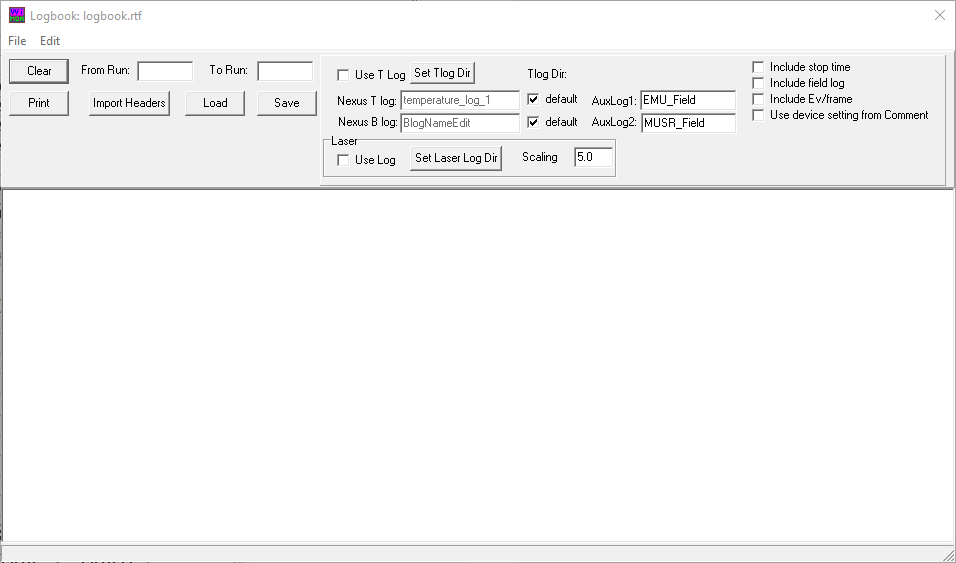

Logbook
A logbook containing the run number, type of sample, temperature, magnetic field, date, time and number of events recorded in a particular set of experiments can be created using the logbook window. This window looks like this:
{kind=link}
To load the run information, enter the first and last run numbers you are interested in into the ‘From Run’ and ‘To Run’ boxes. To also list out the temperature measured by the sensors on the instrument, tick the ‘Use T Log’ checkbox. NeXus files can contain many different field and temperature logs from multiple sensors, and the particular log you are interested in can be specified by the ‘Nexus T/B log’ text boxes. The average value of other logs stored in the nexus files can also be listed out for each run by specifying ‘AuxLog1/2’.
Hint
To read all the run information in the Nexus files, use the free utility JournalViewer, which can be downloaded from here.
Clicking ‘Import Headers’ loads all the run headers from the data files in the range specified into the window. Once these are loaded, you can annotate the logbook by writing comments into the text area, and the logbook can be saved using the ‘Save’ button.